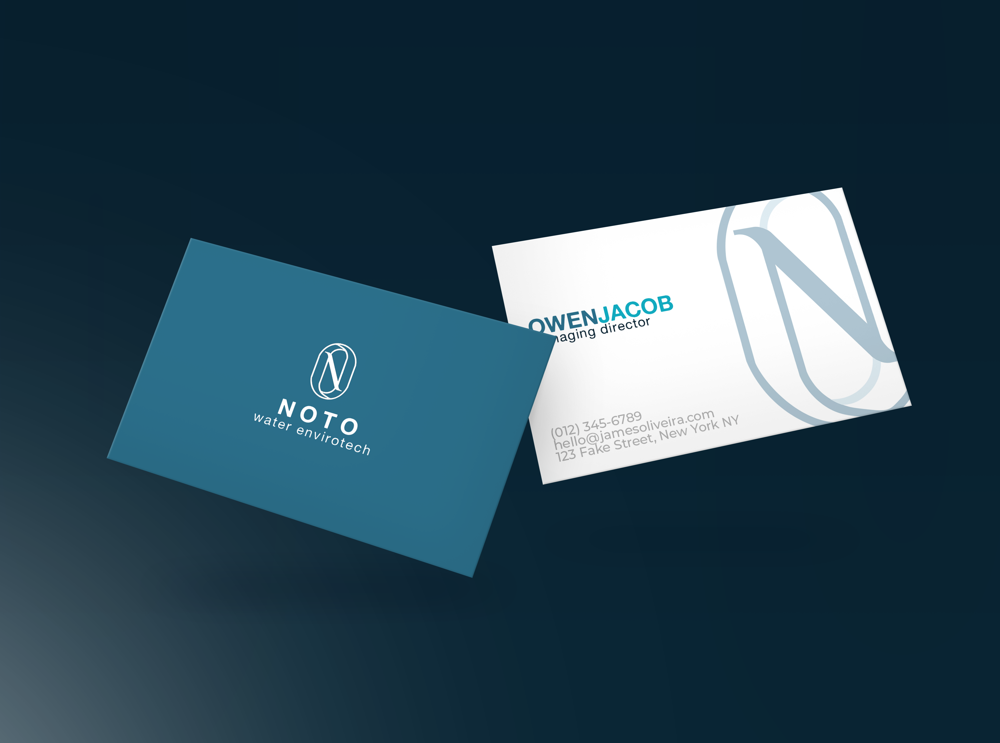

- • Lapisan kerak kapur (kalsium & magnesium silikat) setebal hanya 1.5 mm bertindak sebagai insulator termal dan dapat menyebabkan pemborosan bahan bakar (gas/batu bara) hingga 15%.
- • Pada hotel, air berkapur tinggi menyebabkan linen & handuk kaku, konsumsi deterjen membengkak hingga 50%, serta shower head tersumbat kerak putih keras.
- • Nilai kesadahan air baku (Total Hardness) untuk umpan boiler wajib ditekan hingga < 5 ppm (bahkan 0 ppm).
- • Solusi terunggul: Sistem Automatic Duplex Water Softener dengan Resin Kation Kuat (Strong Acid Cation) dan regenerasi garam industri murni (NaCl).
1. Apa Itu Kesadahan Air (Water Hardness)?
Kesadahan air mengacu pada konsentrasi ion kalsium (Ca2+) dan magnesium (Mg2+) yang terlarut di dalam air. Ketika air sadah dipanaskan di dalam pipa boiler, heat exchanger, atau pemanas air hotel, ion-ion ini bereaksi dengan ion bikarbonat dan mengendap menjadi kalsium karbonat (CaCO3) padat yang menempel keras pada dinding logam pipa layaknya semen batu.
Kondisi ini sangat umum ditemukan di wilayah perbukitan kapur Jawa Barat, seperti Padalarang, Rajamandala, Subang, Purwakarta, hingga sebagian wilayah Kabupaten Bandung.
2. Efek Akumulasi Kerak Terhadap Boiler & Biaya Energi
Kerak kalsium memiliki konduktivitas termal yang sangat buruk (kira-kira 30 hingga 50 kali lebih rendah dibandingkan baja lunak boiler). Ketika kerak melapisi tabung api atau tabung air boiler:
- Overheating & Ledakan Pipa: Panas pembakaran api tidak dapat diserap air dengan cepat, menyebabkan dinding pipa logam mengalami *overheating* lokal, memuai secara ekstrem, retak, bahkan meledak.
- Pemborosan Bahan Bakar Drastis: Setiap milimeter ketebalan kerak membutuhkan kompensasi pembakaran bahan bakar yang jauh lebih masif.
Dampak Ketebalan Kerak Kalsium Karbonat Terhadap Pemborosan Bahan Bakar
3. Dampak Buruk Air Berkapur Pada Operasional Hotel & Laundry
Bagi operasional perhotelan bintang 3 hingga bintang 5, air sadah adalah musuh tersembunyi yang menggerus profit dan reputasi tamu:
- Linen Hotel Cepat Kasar & Kusam: Mineral kapur terikat pada serat kain sprei dan handuk hotel, menyebabkannya terasa kaku, gatal di kulit tamu, dan warna putih bersih berubah menjadi abu-abu kusam dalam hitungan pekan.
- Biaya Bahan Kimia & Sabun Meningkat: Air sadah menetralkan busa sabun dan deterjen. Petugas laundry terpaksa menaikkan dosis chemical hingga dua kali lipat untuk mencapai tingkat kebersihan yang sama.
- Kerusakan Fixture Sanitary Mewah: Kran air berwarna chrome atau matte black di kamar mandi hotel akan tertutup bintik putih kapur yang membandel dan merusak citra kemewahan hotel.
4. Prinsip Kerja & Rekayasa Water Softener Ion Exchange NOTO
Satu-satunya metode fisikokimia yang diakui secara global untuk menghilangkan kesadahan air secara tuntas tanpa menghasilkan air limbah pekat (reject RO) berlebih adalah Ion Exchange (Pertukaran Ion).
Air baku yang mengandung Ca2+ dan Mg2+ dialirkan ke dalam tabung bejana FRP yang berisi butiran resin kation sintetik (seperti Purolite C100E atau Amberlite) yang telah dijenuhkan dengan ion Natrium (Na+).
2R-Na + Ca2+ → R2-Ca + 2Na+
Resin secara selektif menangkap ion kalsium dan magnesium, lalu melepaskan ion natrium yang tidak berkerak ke dalam air. Hasil akhirnya: air menjadi lunak (*soft water*) dengan nilai hardness mendekati 0 ppm, melindungi boiler dan seluruh fasilitas perpipaan hotel secara permanen.
5. Mengapa Sistem Automatic Duplex Menjadi Standar Pabrik?
Ketika kapasitas tukar butiran resin mencapai titik jenuh, resin harus diregenerasi menggunakan larutan air garam murni (*brine solution* / NaCl food grade). Pada fasilitas industri dan hotel yang beroperasi nonstop 24/7, proses regenerasi tidak boleh memutus pasokan air lunak.
Oleh karena itu, PT Noto Water Envirotech merekayasa konfigurasi Duplex Alternating Water Softener dengan digital control valve cerdas berbasis volumetrik meter:
- Tabung A On Duty: Melayani kebutuhan air operasional secara penuh.
- Tabung B Standby: Otomatis masuk ke mode operasional saat Tabung A memulai siklus regenerasi garam selama 60-90 menit.
- Zero Downtime: Suplai air lunak dijamin stabil 24 jam sehari, 365 hari setahun tanpa intervensi manual dari operator.
Ingin Menghitung Kapasitas Water Softener Fasilitas Anda?
Tim insinyur kimia PT Noto Water Envirotech siap melakukan uji titrasi kesadahan total sampel air Anda dan merancang dimensi tabung softener yang paling hemat garam regenerasi.